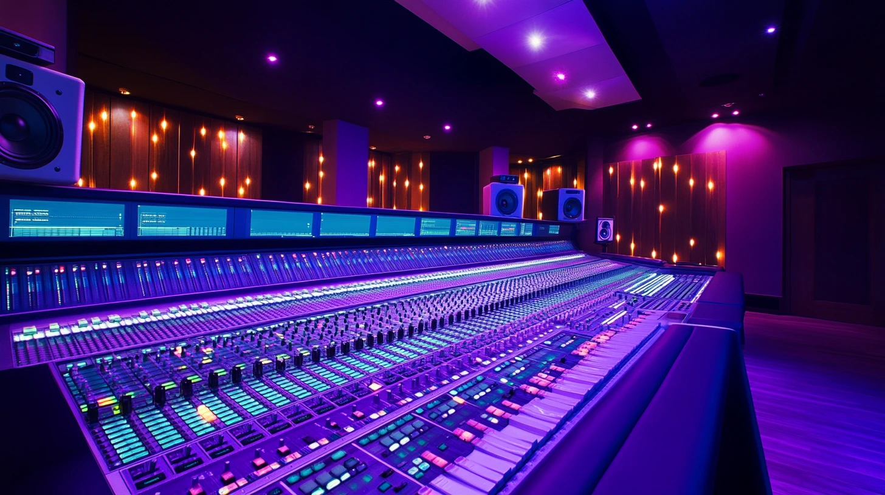

Kvalitet zvuka često je zanemaren aspekt digitalne produkcije, ali može napraviti ogromnu razliku u profesionalnosti i efikasnosti vašeg sadržaja. Bez obzira da li pravite podcast, YouTube video, reklamni spot ili online kurs, dobra audio produkcija će značajno poboljšati doživljaj vaše publike i povećati kredibilitet vašeg brenda.
Zašto je kvalitetan zvuk važan
Loš zvuk može sabotirati čak i najkvalitetniji vizuelni sadržaj. Istraživanja pokazuju da gledaoci često lakse tolerišu video niže rezolucije nego loš zvuk. Evo nekoliko razloga zašto je audio produkcija ključna:
- Jasnoća poruke – Ako vaša publika ne može jasno da čuje šta govorite, propustiće važne informacije
- Profesionalnost – Kvalitetan zvuk odražava profesionalizam i pažnju koju posvećujete detaljima
- Zadržavanje pažnje – Loš zvuk može biti izuzetno iritantan i oterati publiku
- Raspoloženje – Zvuk ima snažan uticaj na emocionalnu povezanost sa sadržajem
Osnovna oprema za audio produkciju
1. Mikrofoni
Izbor pravog mikrofona je verovatno najvažnija odluka koju ćete doneti kada je u pitanju audio produkcija. Evo nekoliko popularnih opcija:
- USB kondenzatorski mikrofoni – Odlični za početnike zbog jednostavnog povezivanja i pristojnog kvaliteta (Blue Yeti, Audio-Technica AT2020USB+)
- XLR kondenzatorski mikrofoni – Viši kvalitet, ali zahtevaju audio interfejs (Rode NT1, Shure SM7B)
- Dinamički mikrofoni – Bolji za bučna okruženja (Shure SM58, Rode PodMic)
- Lavalier mikrofoni – Diskretni mikrofoni za pričvršćivanje na odeću (Rode SmartLav+, Sennheiser ME2)
- Shotgun mikrofoni – Usmereni mikrofoni idealni za video produkciju (Rode VideoMic, Sennheiser MKE 600)
Pro tip:
Bliže je bolje. Pozicionirajte mikrofon što bliže izvoru zvuka (obično 10-15 cm od usta) za najbolji odnos signala i šuma.
2. Audio interfejsi
Ako koristite profesionalni XLR mikrofon, trebaće vam audio interfejs da ga povežete sa računarom. Popularni modeli za početnike uključuju:
- Focusrite Scarlett Solo
- PreSonus AudioBox USB 96
- Universal Audio Volt 1
- MOTU M2
3. Slušalice
Zatvorene studijske slušalice su neophodne za monitoring zvuka tokom snimanja i kasnije tokom montaže. Traže se modeli sa ravnom frekvencijskom karakteristikom, kao što su:
- Audio-Technica ATH-M50x
- Beyerdynamic DT 770 Pro
- Sony MDR-7506
4. Akustični tretman
Čak i najbolji mikrofon neće zvučati dobro u prostoriji sa lošom akustikom. Razmotrite:
- Akustične panele – Za smanjenje refleksija zvuka
- Bas zamke – Za kontrolu niskofrekvencijskih rezonanci
- Pop filtere – Za smanjenje ploziva (p, b, t zvukova)
- Shock mountove – Za smanjenje vibracija koje se prenose na mikrofon
- Prenosne izolatore – Poput Kaotica Eyeball ili domađih varijanti
Proces snimanja
Dobar snimak je temelj dobre audio produkcije. Evo ključnih koraka za postizanje kvalitetnog audio snimka:
1. Priprema prostora
- Odaberite tihu prostoriju bez ambijentalne buke (klima uređaji, ventilatori, hladnjaci)
- Izbegavajte prostorije sa puno tvrdih, reflektivnih površina (prazne sobe sa visokim plafonima)
- Razmotrite improvizovani studio (ormari sa odećom, kreveti sa jastucima mogu apsorbovati zvuk)
- Koristite tepihe, zavese, i druga meka tkanja za smanjenje reverberacije
2. Proveravanje nivoa
Pre nego što započnete snimanje, obavezno:
- Podesite gain (pojačanje) mikrofona tako da prosečni nivoi budu oko -18 dB, a maksimalni ne prelaze -6 dB
- Snimite test od 30 sekundi i proverite da li ima distorzije, šuma ili drugih problema
- Koristite slušalice tokom snimanja da biste čuli tačno ono što mikrofon snima
- Zapamtite da je bolje snimiti tiše nego preglasno - clipping (preopterećenje) ne može se popraviti u post-produkciji
3. Pozicioniranje mikrofona
Pravilno pozicioniranje mikrofona može drastično poboljšati kvalitet zvuka:
- Za glas: pozicionirajte mikrofon malo sa strane usta (pod uglom od 45°) da izbegnete direktne vazdušne udare
- Održavajte konstantnu udaljenost od mikrofona (koristite pop filter kao referentnu tačku)
- Za instrumente: eksperimentišite sa različitim pozicijama da pronađete najbolji zvuk
Pro tip:
Blizinski efekat (proximity effect) čini da glasovi zvuče dublje i punije kada ste bliže mikrofonu. Koristite ovo u svoju korist za topliji ton, ali pazite da ne bude preterano.
Post-produkcija i obrada zvuka
Nakon snimanja, vreme je za obradu zvuka kako biste postigli profesionalni rezultat. Evo uobičajenog workflow-a:
1. Osnovne korekcije
- Uklanjanje šuma - Koristite alate poput iZotope RX ili Audacity Noise Reduction za uklanjanje pozadinskog šuma
- Editovanje - Uklonite poštapalice, duge pauze, duple reči i druge greške
- Reparacija - Popravite problematične delove poput praskanja, zujanja ili slučajnih zvukova
2. Obrada dinamike
- Kompresor - Smanjuje dinamički opseg (razliku između najtišeg i najglasnijeg dela) za konzistentniji nivo zvuka
- Limiter - Sprečava da signal prelazi određeni nivo
- Gate - Eliminiše tihe zvukove između fraza
- De-esser - Smanjuje naglašene sibiliante (s, š, c zvukove)
Pro tip:
Kompresiju koristite umereno. Početne postavke za glas: ratio 2:1 do 4:1, threshold oko -18dB, attack 10-20ms, release 50-150ms.
3. Ekvilizacija (EQ)
EQ vam omogućava da pojačate ili smanjite određene frekvencije:
- Visokopropusni filter na 80-100 Hz za uklanjanje nepotrebnog basa i tutnjave
- Smanjenje na 200-300 Hz ako zvuk deluje "mutno" ili "zamagljeno"
- Blago pojačanje na 3-5 kHz za poboljšanje razgovetnosti
- Blago pojačanje na 8-10 kHz za dodatnu "svetlinu" i "vazdušnost"
4. Prostorni efekti
Ovi efekti mogu dodati prostornost i dubinu vašem zvuku:
- Reverb - Simulira akustiku prostora, koristite ga suptilno
- Delay - Stvara eho efekat, koristan za muzičke elemente
5. Finalizacija
- Normalizacija: podesite ukupnu glasnoću na standardni nivo (-14 LUFS za YouTube, -16 LUFS za podcast)
- Master limiter: za sprečavanje digital clipping-a
- Uvek izvozite finalni fajl u visokom kvalitetu (WAV 24bit/48kHz) a zatim konvertujte u MP3 ako je potrebno
Preporučeni softver za audio produkciju
Specifični saveti za različite formate
Podcast
- Fokusirajte se na razgovetnost glasa
- Ujednačite nivoe svih govornika
- Ciljajte -16 LUFS za glasnoću
- Koristite chaptering i tagove
Video
- Ubacite ambijentalni zvuk za kontinuitet
- Koristite muziku za pojačavanje emocija
- Ciljajte -14 LUFS za glasnoću
- Dodajte titlove za pristupačnost
Voice-over
- Snimite više verzija za izbor
- Posebnu pažnju obratite na dikciju
- Izbegavajte pre-jake kompresije
- Označite dobre delove tokom snimanja
Muzička produkcija
- Koristite referentne numere
- Pazite na masking između instrumenata
- Ostavite prostor u miksu
- Obratite pažnju na faze elemenata
Česte greške koje treba izbegavati
- Prekomerna obrada - Više nije uvek bolje kad je reč o efektima. Suptilnost je ključ.
- Ignorisanje ambijenta - Nekontrolisana akustika prostorije će sabotirati i najbolji mikrofon.
- Previše reverba - Čest problem kod početnika koji može učiniti zvuk mutnim i nerazgovetnim.
- Preglasno snimanje - Snimanje sa previsokim gain-om uzrokuje clipping koji ne može biti popravljen.
- Nedovoljno planiranja - Snimanje bez pripreme često vodi do loših rezultata i frustracije.
Zaključak
Kvalitet zvuka može napraviti razliku između amaterskog i profesionalnog digitalnog sadržaja. Sa osnovnim razumevanjem opreme, tehnika snimanja i post-produkcije, možete značajno unaprediti svoj audio, čak i sa ograničenim budžetom.
Zapamtite da je audio produkcija kombinacija tehničkog znanja i umetničkog osećaja - isprobavajte različite pristupe dok ne pronađete zvuk koji odgovara vašem sadržaju i stilu. Najvažnije je početi sa najboljim mogućim snimkom, jer ni najbolja post-produkcija ne može u potpunosti spasiti loš originalni materijal.
Komentari (8)
Comments (8)
Ostavite komentar
Leave a comment
Nikola Đorđević
Pre 3 danaHvala na ovim savetima! Upravo sam počeo da pravim podcast i ovo mi je pomoglo da rešim problem sa reverberacijom u mojoj prostoriji. Kupio sam akustične panele i razlika je ogromna.
Milica Stanković
Pre 7 danaKoji de-esser plugin preporučujete za Adobe Audition? Imam problema sa sibilantima u svojim snimcima.
Ivan Popović Autor
Pre 6 danaZdravo Milice! Audition ima sasvim dobar ugrađeni de-esser u efektima za obradu glasa. Ako tražiš nešto naprednije, Waves DeEsser ili FabFilter Pro-DS su odlični dodatni plugini.